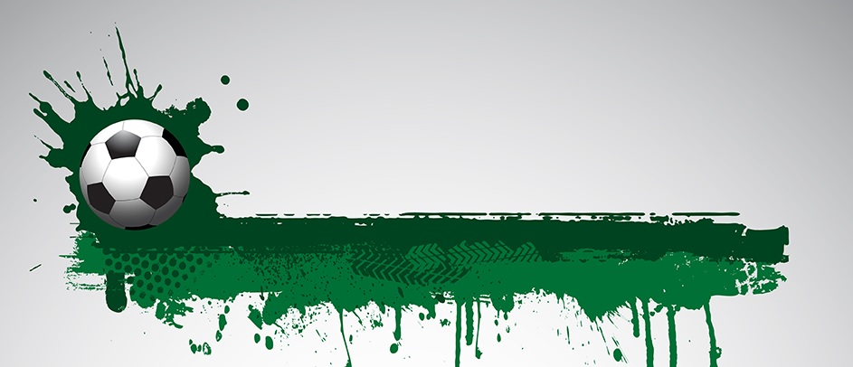

About NYSL

To support young athletes living in Chicago's northside neighborhoods, who have an interest in learning and playing soccer, with opportunities to learn and practice skills related to the game of soccer, specifically those skills around team cooperation and good sportsmanship.
The Northside Youth Soccer League aspires to develop strong, well-rounded, and mindful athletes through the building of character, self-discipline, and leadership.
The Northside Youth Soccer League was stablished in 1996 to provide athletes residing in Chicago's northside neighborhoods an environment in which to learn and play soccer. To be a member of NYSL, you must be between the ages of 4 - 12 and reside in a Chicago northside neighborhood. NYSL is ran by a small full-time staff, and relies on the generous volunteer time of parents and previous league members.